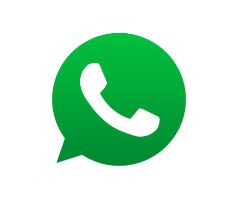

تأسست سنة 2020 في البرواقية، الجزائر، وتختص شركة Freedom Recycling في إعادة تدوير زجاجات PET بعد الاستهلاك والصناعة وتحويلها إلى مواد عالية الجودة موجهة للصناعة.
اتصل بناتعمل Freedom Recycling على تحويل النفايات البلاستيكية إلى موارد قيمة من أجل بيئة أنظف ومستقبل أكثر استدامة.
ننتج رقائق PET معاد تدويرها عالية الجودة تلبي معايير الصناعة من حيث النقاء والثبات.
تُستخدم رقائقنا في مجالات النسيج، وتغليف المواد الغذائية، وتغليف المشروبات.
نستخدم تقنية الفرز البصري من Bühler، بما في ذلك وحدتين SORTEX A ووحدة SORTEX N، لتحقيق فصل دقيق للألوان وإزالة فعالة للشوائب.
كل زجاجة نقوم بإعادة تدويرها تساعد في تقليل التلوث البلاستيكي، والحفاظ على الموارد الطبيعية، ومنح البلاستيك حياة جديدة.
إذا كنت تبحث عن شريك موثوق في إعادة تدوير PET وحلول المواد الدائرية، نحن جاهزون للعمل معك.

WhatsApp